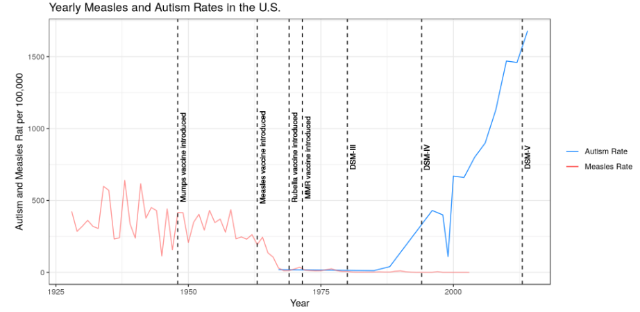

Blog
Want to hear some of my thoughts? Want to check out my science communication skills in action? Then you have come to the right place. Some of the work published here was originally published during my time as an undergraduate student at the University of Georgia on The Athens Science Observer. To read the full blog piece, just click on the cover image!
Also, keep in mind while reading these blogs that I am just one person: not statisically significant nor representative (little statistics humor for ya).

Effectiveness of Vaccines
Despite the effectiveness of vaccines being established for years, there is still some controversy about their safety and effectiveness. Using data, we can see that vaccines do appear to be effective and that their link to autism is unfounded.
Fake It Til' You Make It
Exploring my experiences with impostor syndrome and talk about how feelings of inadequacy are all too common amongst high achievers

Computers Detecting Sarcasm? Great!
If you think that humans have a hard time detecting sarcasm, imagine how difficult it must be for computers
Mo' Data Mo' Problems
Is the revolution of Big Data causing more problems than solutions?
Catholicism and Science
Discover whether religion, specifically Catholicism, and science can coexist (spoiler: they can!)
Can't Stop (Catching) the Feeling(s)!
In this Valentine's Day piece, I explore how a "no strings attached" relationship often ends with someone "catching the feelings"
Don't Believe Everything You Read
With numerous media outlets reporting on studies that are full of statistical mistakes, I explore why statistics education is so important
The Science of Blacking Out
Ever wonder why after a night of heavy drinking people can't "remember" what happened? What if they never formed a memory in the first place?

Why Computers Can't Do Everything
Despite all of the promising work in fields such as machine learning and AI, there are still some simple problems that computers can't solve. Why is that?

Internet Addiction: Fact or Fantasy
As the internet continues to provide more and more entertainment in the form of social media, video streaming, and online gaming, can someone become addicted to the Internet?